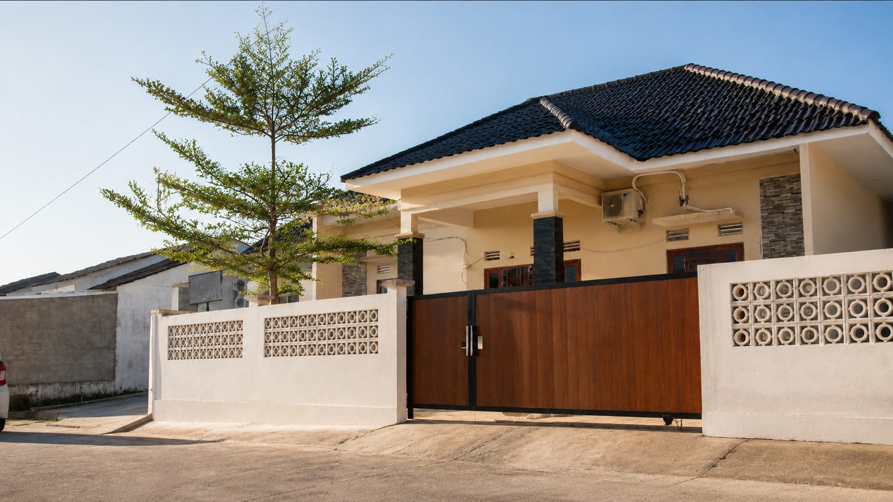
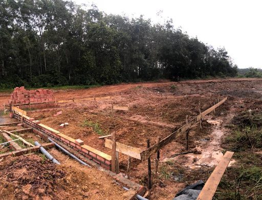
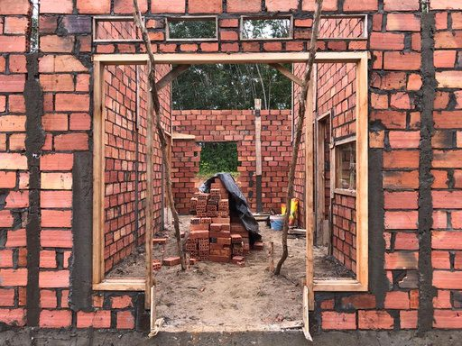
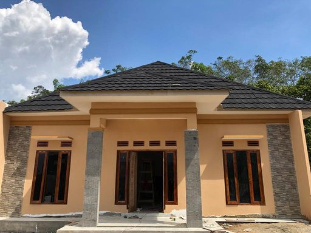
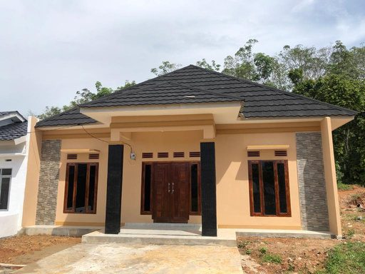

Yayasan Al-Mukmin Darunnajah Center
Rumah bagi anak-anak yatim, sekolah kehidupan bagi para penghafal Al-Qur’an, dan ladang amal bagi setiap insan yang peduli.
Generasi yang mandiri, cerdas, dan sejahtera
Yayasan Al-Mukmin Darunnajah Center adalah lembaga yang bergerak di bidang sosial, keagamaan, pendidikan, dan kemanusiaan, dan bertujuan membantu mewujudkan generasi yang mandiri, cerdas, sejahtera, dan berdaya saing tinggi di masa depan.
Melalui LKSA (Lembaga Kesejahteraan Sosial Anak) Darul Falah, yayasan memfasilitasi anak yatim dhuafa untuk memperoleh pendidikan formal, akhlak, dan agama yang baik. Jumlah anak asuh binaan akan terus bertambah seiring program yang digulirkan.
Visi Menjadikan lembaga bernuansa Islami yang maju di bidang sosial, keagamaan, pendidikan, dan kemanusiaan, agar dapat menghasilkan sumber daya insani yang unggul dan berdaya saing tinggi di era global.
Legalitas yayasan
Pengurus
| Sekretaris | Herdudi |
|---|---|
| Bendahara | Ade Alpino |
| Pengurus LKSA | M. Tarjimy · Al Ikhsanu Sobirin |

Misi
- Membina akhlak dan budi pekerti setiap insan sesuai pedoman Al-Qur’an dan As-Sunnah.
- Melahirkan generasi unggul yang berakhlak mulia, berwawasan luas, dan mampu berdikari menghadapi kemajuan di era global.
- Mewujudkan tercapainya kualitas mutu pendidikan yang tinggi.
- Mengembangkan diri setiap insan sejalan dengan perkembangan ilmu pengetahuan, teknologi, dan kebudayaan.
- Membantu mengentaskan permasalahan sosial kemanusiaan yang terjadi di masyarakat.
Yang kami jalankan setiap hari
- Kebutuhan hidup dan beasiswaAnak asuh mendapat fasilitas kebutuhan sehari-hari dan bantuan pendidikan sampai jenjang yang lebih tinggi.
- Tahfidz Qur’anProgram menghafal Al-Qur’an untuk mewujudkan generasi Qur’ani yang berakhlak mulia.
- DiniyahAl-Qur’an, Hadits, Akidah & Akhlak, Fiqih, Sejarah Kebudayaan Islam, Bahasa Arab, hingga praktik ibadah.
- Bimbel pelajaran sekolahPelajaran tambahan di luar sekolah, meliputi Matematika dan Bahasa Inggris.
- Sedekah SubuhMengajak masyarakat berbagi untuk anak yatim, dhuafa, dan mereka yang membutuhkan.
- Nasi Jum’at BerkahBerbagi makanan setiap Jum’at kepada masyarakat di sekitar yayasan.
Rumah LKSA Darul Falah, dari tanah kosong sampai siap huni
Dibangun Januari sampai Juni 2023 sebagai rumah tinggal dan tempat belajar anak asuh.

JanuariPondasi
FebruariDinding
MaretAtap
JuniSelesai
Dokumentasi kegiatan yayasan
Mari berpartisipasi membangun harapan anak negeri
Untuk donasi, sedekah, atau kerja sama, hubungi pengurus yayasan langsung. Yayasan dikelola terpisah dari kegiatan usaha RTD Group.
- WhatsApp+62 821 8164 6071
- Emailalmukmindarunnajah@gmail.com
- Instagram@almukmin.darunnajah